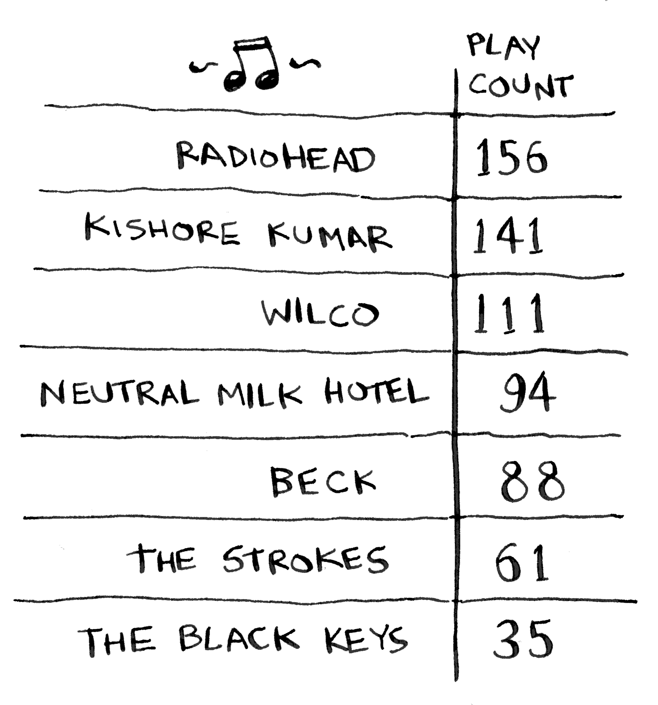
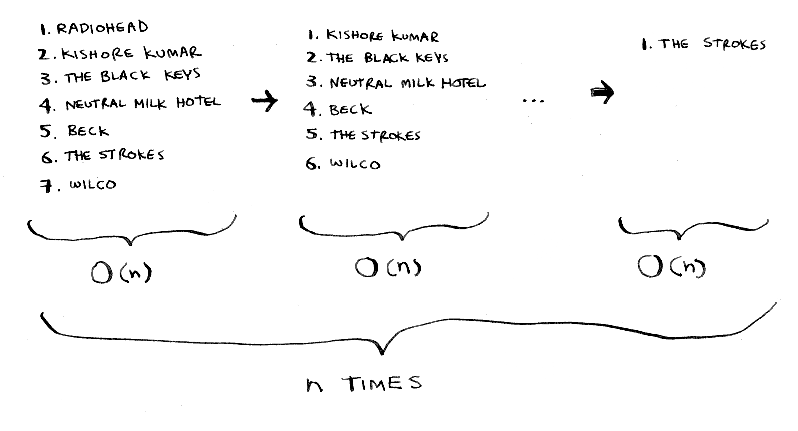

《算法图解》学习
《算法图解》学习之二：选择排序
2. 选择排序
2.1. 内存的工作原理
2.2. 数组和链表
2.2.1. 链表
链表中的元素可存储在内存的任何地方。链表的每个元素都存储了下一个元素的地址，从而使一系列随机的内存地址串在一起。
2.2.2. 数组
对于链表，在需要读取链表的最后一个元素时，你不能直接读取，因为你不知道它所处的地址，必须先访问元素 #1，从中获取元素 #2 的地址，再访问元素 #2 并从中获取元素 #3 的地址，以此类推，直到访问最后一个元素。需要同时读取所有元素时，链表的效率很高：你读取第一个元素，根据其中的地址再读取第二个元素，以此类推。但如果你需要跳跃，链表的效率真的很低。
数组与此不同:你知道其中每个元素的地址。需要随机地读取元素时，数组的效率很高，因为可迅速找到数组的任何元素。在链表中，元素并非靠在一起的，你无法迅速计算出第五个元素的内存地址，而必须先访问第一个元素以获取第二个元素的地址，再访问第二个元素以获取第三个元素的地址，以此类推，直到访问第五个元素。
2.2.3. 术语
元素的位置称为索引。
下面列出了常见的数组和链表操作的运行时间：
2.2.4. 在中间插入
当需要在中间插入元素时，链表是更好的选择。
2.2.5. 删除
如果你要删除元素呢？链表也是更好的选择，因为只需修改前一个元素指向的地址即可。而使用数组时，删除元素后，必须将后面的元素都向前移。
不同于插入，删除元素总能成功。如果内存中没有足够的空间，插入操作可能失败，但在任何情况下都能够将元素删除。
下面是常见数组和链表操作的运行时间：
需要指出的是，仅当能够立即访问要删除的元素时，删除操作的运行时间才为 。通常我们都记录了链表的第一个元素和最后一个元素，因此删除这些元素时运行时间为 。
数组和链表哪个用得更多呢？显然要看情况。但数组用得很多，因为它支持随机访问。有两种访问方式:随机访问和顺序访问。 顺序访问意味着从第一个元素开始逐个地读取元素。链表只能顺序访问：要读取链表的第十个元素，得先读取前九个元素，并沿链接找到第十个元素。随机访问意味着可直接跳到第十个元素。本书经常说数组的读取速度更快，这是因为它们支持随机访问。很多情况都要求能够随机访问，因此数组用得很多。数组和链表还被用来实现其他数据结构。
2.3. 选择排序
假设你的计算机存储了很多乐曲。对于每个乐队，你都记录了其作品被播放的次数。

你要将这个列表按播放次数从多到少的顺序排列，从而将你喜欢的乐队排序。该如何做呢？
一种办法是遍历这个列表，找出作品播放次数最多的乐队，并将该乐队添加到一个新列表中。

再次这样做，找出播放次数第二多的乐队。

继续这样做，你将得到一个有序列表。

下面从计算机科学的角度出发，看看这需要多长时间。别忘了， 时间意味着查看列表中的每个元素一次。例如，对乐队列表进行简单查找时，意味着每个乐队都要查看一次。
要找出播放次数最多的乐队，必须检查列表中的每个元素。正如你刚才看到的，这需要的时间为 。因此对于这种时间为 的操作，你需要执行 次。

需要的总时间为 ，即 。
需要检查的元素数越来越少
随着排序的进行，每次需要检查的元素数在逐渐减少，最后一次需要检查的元素都只有一个。既然如此，运行时间怎么还是 呢？这个问题问得好，这与大O表示法中的常数相关。
你说得没错，并非每次都需要检查 个元素。第一次需要检查 个元素，但随后检查的元素数依次为 ，，...，2 和 1。平均每次检查的元素数为 ，因此运行时间为 。 但大O表示法省略诸如 1/2 这样的常数，因此简单地写作 或 。
选择排序是一种灵巧的算法，但其速度不是很快。快速排序是一种更快的排序算法，其运行时间为 。
示例代码：
# 先编写一个用于找出数组中最小元素的函数 def findSmallest(arr): smallest = arr[0] # 存储最小的值 smallest_index = 0 # 存储最小元素的索引 for i in range(1, len(arr)): if arr[i] < smallest: smallest = arr[i] smallest_index = i return smallest_index # 使用这个函数来编写选择排序算法 def selectionSort(arr): newArr = [] for i in range(len(arr)): smallest = findSmallest(arr) newArr.append(arr.pop(smallest)) return newArr print(selectionSort([5, 3, 6, 2, 10]))
运行结果：
[2, 3, 5, 6, 10]